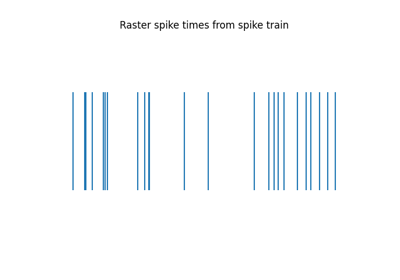
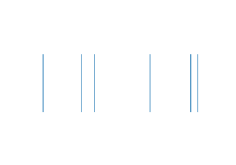
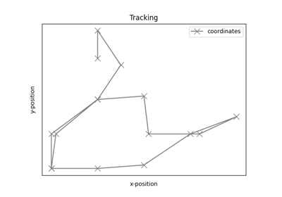
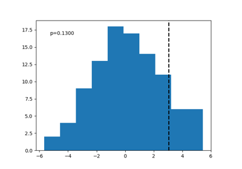

Tutorials¶
Tutorials, split up by sub-module, introducing the tools available in spiketools.

Measures & Conversions

Simulations

Spatial Analyses

Statistical Analyses
Tutorials, split up by sub-module, introducing the tools available in spiketools.